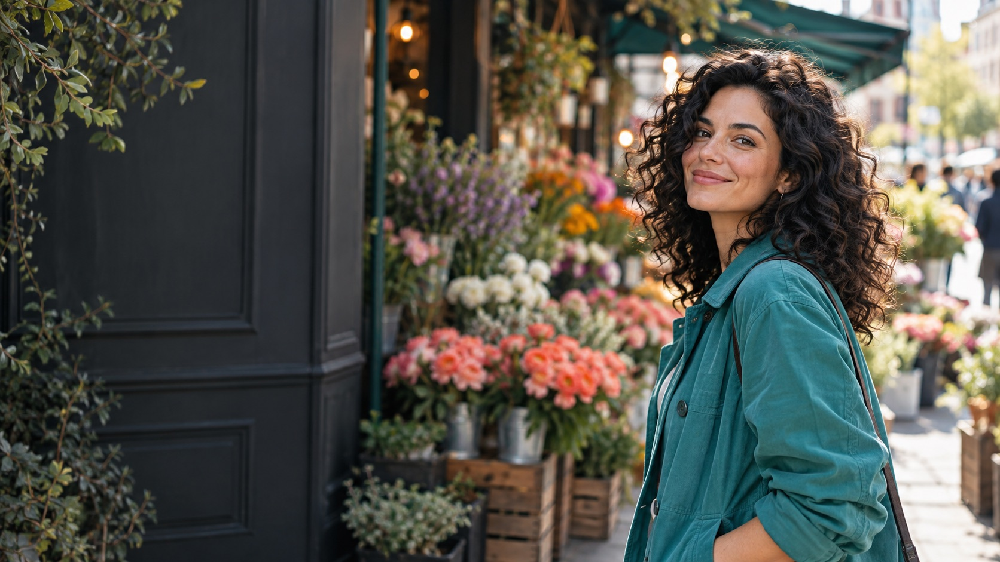
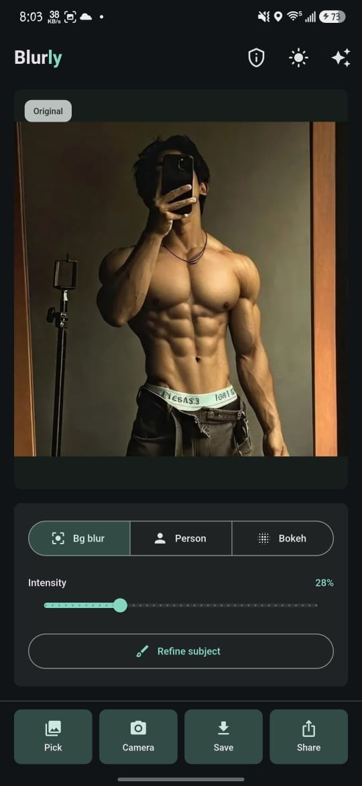
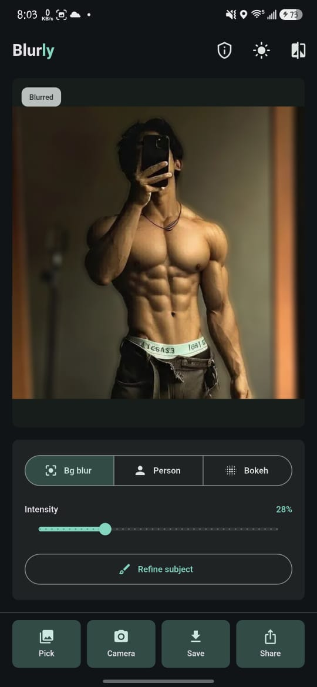
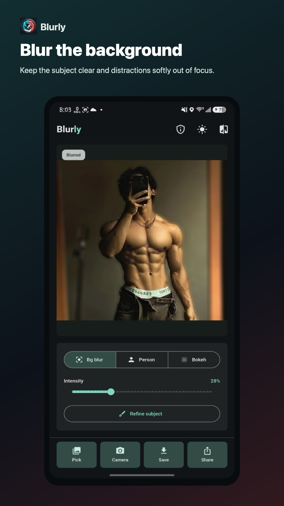
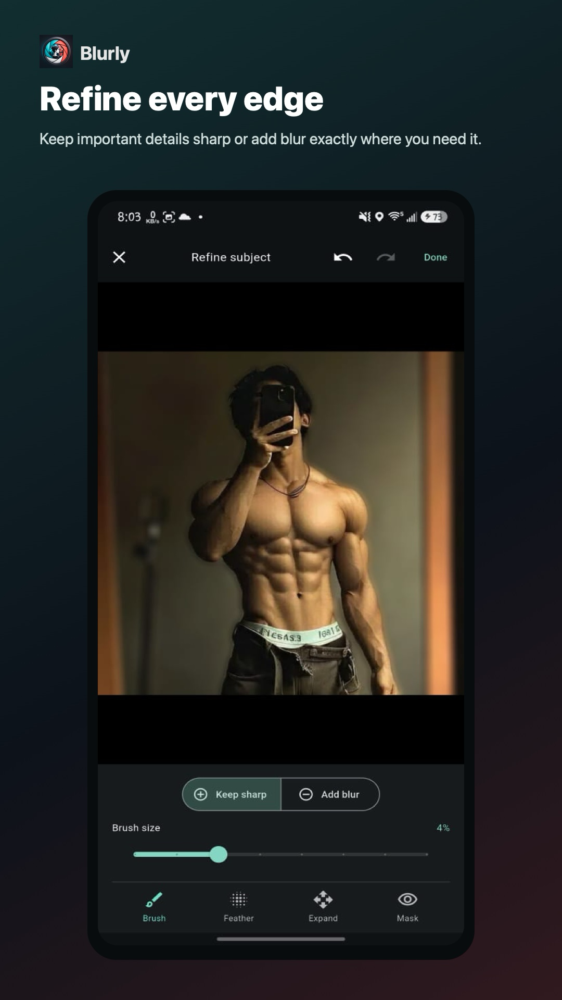
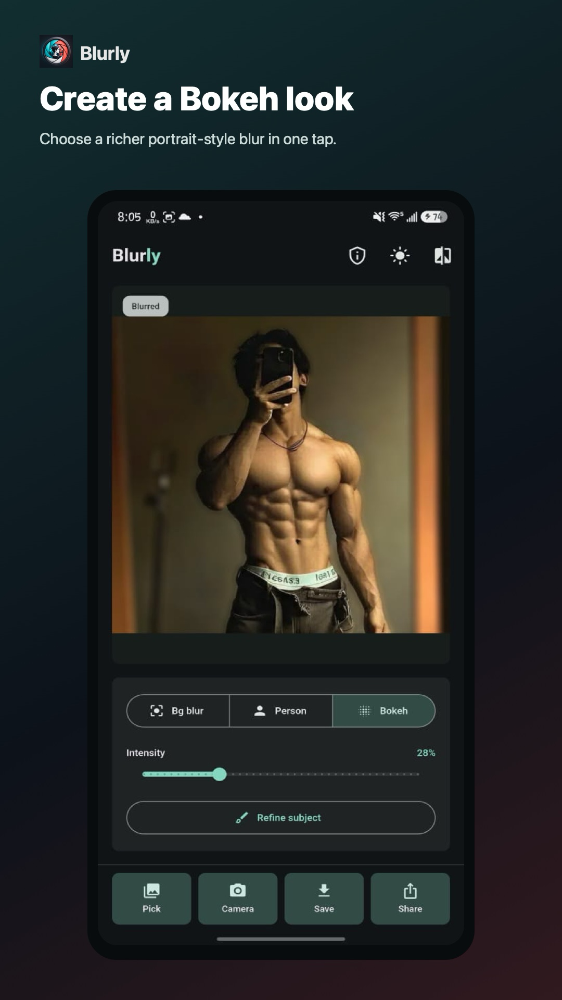

Find your focus
Pick a photo or take a new one. Choose Background, Person, or a warmer Bokeh look, then set the blur intensity that feels right.

Your moments, in focus
Make the moment stand out.
Quiet the background. Keep what matters sharp. Give your portraits the attention they deserve, in a few thoughtful taps.
See the difference
One photo can feel completely different when the background steps back. Blurly helps your subject take the lead, then gives you the tools to make the result your own.


Made for your eye
Pick a photo or take a new one. Choose Background, Person, or a warmer Bokeh look, then set the blur intensity that feels right.
Use Keep sharp and Add blur brushes to correct tricky edges. Zoom in, adjust feathering and subject size, and apply the changes together.
Compare the original, save a finished photo to your gallery, or share it straight from Blurly.
Inside the app
Make the first pass quickly. Slow down for the edges. Blurly moves at your pace.



Your photo stays yours
Blurly processes your photos on your device. There is no account to create and no photo-processing server. Your images leave your device only when you choose to share them.
Read the privacy policyGood to know
Everything you need before making your first edit.
Blurly is especially suited to portraits and photos of people. The current subject model is trained for people, so other objects and difficult edges can need a little brush refinement.
Yes. In Refine subject, use Keep sharp and Add blur brushes, then adjust edge softness and subject size before applying your changes.
No. Photo processing happens on your device. You choose when to save or share a finished image.
Blurly is available on Google Play for Android. You can also explore the open-source project on GitHub.